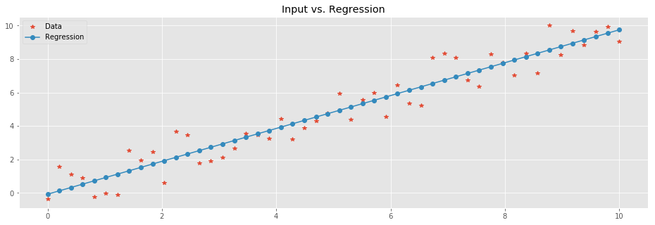
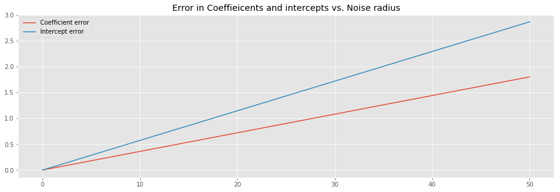

- Tue 07 March 2017
- ML
- #linear, #regression, #model, #example
(Original notebook can be found in this gist)
import numpy as np
from sklearn import linear_model
import matplotlib.pyplot as plt
%matplotlib inline
plt.rcParams['figure.figsize'] = (16.0, 5.0)
plt.style.use('ggplot')
This is a rather straightforward example of how to train a linear regression model in a 2D case. \(X\) is a vector with the independent variables and \(Y\) with the dependent ones. In this particular example we synthetically generate points on a linear function while adding noise.
X = np.linspace(0,10,50)
X[:3] # sample of X
array([ 0. , 0.20408163, 0.40816327])
np.random.seed(42)
noise = 1.5*(2*np.random.random(len(X)) - 1)
Y = (X + noise)
Y[:3] # sample of Y
array([-0.37637964, 1.55622455, 1.10414509])
We start an instance of a linear regression model.
regr = linear_model.LinearRegression()
We train it on the synthetic data.
regr.fit(X.reshape(-1,1),Y)
LinearRegression(copy_X=True, fit_intercept=True, n_jobs=1, normalize=False)
The reshape above is there due to a warning/error you might be seeing if omitted.
Once trained, the model can be used to predict the values of the points we started with in \(X\). Note, as we are dealing with a linear model, there is no way of ending up with over-fitting model.
Y_pred = regr.predict(X.reshape(-1,1))
plt.plot(
X,Y,'*', # Data
X, Y_pred,'-o' # Regression
)
plt.legend(['Data','Regression'])
plt.title('Input vs. Regression');

Let's look into the result. The linear function to which we added noise was \(y=ax + b\) where the coefficient \(a = 1\) and the intercept \(b=0\). We can compute \(a\) and \(b\) of the trained model. \(a\), a.k.a. the slope, is directly computed by:
(Y_pred[10] - Y_pred[9])/(X[10] - X[9])
0.98216273101406792
It is actually an attribute of the model:
regr.coef_
array([ 0.98216273])
Similarly, the intercept is merely the value of the model for \(X=0\):
Y_pred[0]
-0.073041941893555951
And again, this is an attribute of the model:
regr.intercept_
-0.073041941893555951
In the example so far, the noise was uniformly distributed in the \([-1.5,1.5)\) interval. Next, we'd like to check the relation between the radius (\(1.5\) in this case) of the noise and the coefficient/intercept of the model.
def gen_data(size=30, noise_radius=1.5, seed=42):
X = np.linspace(0,10,size)
np.random.seed(seed)
noise = noise_radius*(2*np.random.random(len(X)) - 1)
Y = (X + noise)
return X, Y
def train_predict(X, Y):
regr = linear_model.LinearRegression()
regr.fit(X.reshape(-1,1),Y)
Y_pred = regr.predict(X.reshape(-1,1))
return regr, Y_pred
Next we are going to generate synthetic data sets with growing noise radius. In each iterations, we will register the coefficient and the intercept of the trained model.
coeff = []
inter = []
rads = np.linspace(0,50,1000)
for rad in rads:
X, Y = gen_data(noise_radius=rad)
regr, Y_pred = train_predict(X,Y)
coeff.append(regr.coef_)
inter.append(regr.intercept_)
Let's have a look at the behavior of the error between the coefficients and intercepts that we witness and the real ones we used for the generation of the data.
plt.plot(
rads,np.abs(np.add(-1,coeff)), # we know that the slope we use equals 1
rads,np.abs(inter)
)
plt.title('Error in Coeffieicents and intercepts vs. Noise radius')
plt.legend(['Coefficient error', 'Intercept error']);

The above image suggest that the error of both the coefficient and the intercept linearly depend on the noise radius.
Formally, the we have samples from a linear function
where \(\epsilon\) is uniform noise. For each \(x_i \in X\) we have a corresponding value \(y_i \in Y\). Our objective is to find \(a\) and \(b\) such that \(y \sim ax +b\). We do so by minimizing the \(L_2\) error
as a function of \(a\) and \(b\). We take partial derivatives and find the minimum:
This turns to be:
From this, we can have a closed formula for \(a\) and \(b\):
Here, \(\bar{X}\) and \(\bar{Y}\) denote the mean of \(X\) and \(Y\), respectively. Furthermore, \(n\) is the number of sample points. We can now check the closed formulas, and compare them to the coefficient and intercept of the model we tarined:
(np.dot(X,Y)/(len(Y)) - X.mean()*Y.mean())/\
(np.dot(X,X)/len(X) - np.power(X.mean(),2))
-0.8010271422548586
vs.
regr.coef_
array([-0.80102714])
And:
Y.mean() - X.mean()* \
(np.dot(X,Y)/(len(Y)) - X.mean()*Y.mean())/\
(np.dot(X,X)/len(X) - np.power(X.mean(),2))
2.8648629210179717
vs.
regr.intercept_
2.864862921017969
Lastly, the closed formulas above provide good intuition why the error of the model grows linearly. In the future I will explain this in details.